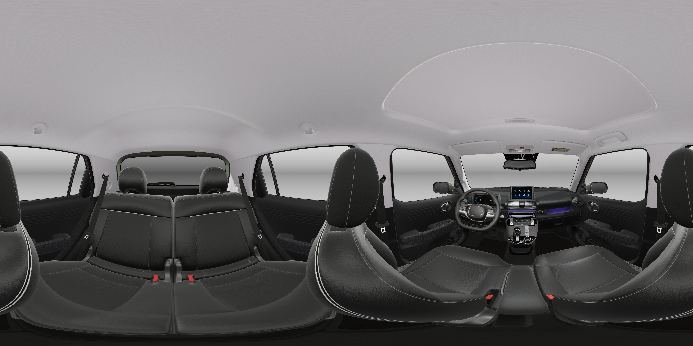

<!DOCTYPE html>
<html lang="en">
<head>
    <meta charset="UTF-8">
    <meta http-equiv="X-UA-Compatible" content="IE=edge">
    <meta name="viewport" content="width=device-width, initial-scale=1.0">

    <link rel="stylesheet" href="https://cdn.jsdelivr.net/npm/pannellum@2.5.6/build/pannellum.css"/>
    <script src="./js/marzipano.js" ></script>
    <style>
        #pano {
            width: 600px;
            height: 200px;
        }
    </style>
    
    <title>Document</title>
</head>
<body>
    <!--  -->
    <div id="pano"></div>
    
    <script>
        var viewer = new Marzipano.Viewer(document.getElementById('pano'));
        var geometry = new Marzipano.EquirectGeometry([{ width: 4000 }]);
        source = Marzipano.ImageUrlSource.fromString('./img/360.jpg');
        var view = new Marzipano.RectilinearView({ yaw: 1.6 , pitch: 0.3 });

        var scene = viewer.createScene({
            source: source,
            geometry: geometry,
            view: view,
            pinFirstLevel: true
        });

      // Display scene.
      scene.switchTo({}, function(){
        console.log('scene switch');
      });
    
    </script>
    
</body>
</html>